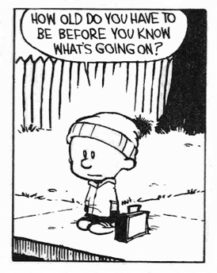

An online class with international access
Live What You Know
Integrate non-duality with your actual life
February 24, 2019
Noon- 2pm eastern
(click here for your time zone)
Get in on the early registration discount- good till Feb 21

"Something shifted for me in this class. Things I've been trying to understand for years
finally came together." —Germany
If you’ve read everything from Alan Watts to Zen Buddhism and all the non-dual alphabet in between, if you've been to a bunch of retreats, done inquiry after inquiry, listened to a zillion podcasts, and yet still find yourself wondering,
"But… how do I live everyday life with this info? What about relationships, money, work, health? They don't just go away just because the self is 'seen through' do they?"
Or maybe you find yourself thinking:
"But… how do I live everyday life with this info? What about relationships, money, work, health? They don't just go away just because the self is 'seen through' do they?"
Or maybe you find yourself thinking:
- I should know better by now
- I’ll never get it
- I thought I got it but I lost it
- Other people seem so much more at peace than I am
- I know so much; so why aren’t I happier/more successful/enlightened…
then join Judy for another blow-the-mind 2 hour online class: Live What You Know and learn how to integrate all that hard-won knowledge in a meaningful way with… actually living your life.
"This class was marvelous. I loved the content, the exercises, and the whole style.
Wonderful." -- The Netherlands
Judy's unique and powerful approach grounds non-duality in a way that is supportive, loving, straight-talking and fun.
It's an outside-the-usual-boxes approach that can help you hold onto your shifts, enable new ones, and live your life in a more integrated way.
"This class was marvelous. I loved the content, the exercises, and the whole style.
Wonderful." -- The Netherlands
Judy's unique and powerful approach grounds non-duality in a way that is supportive, loving, straight-talking and fun.
It's an outside-the-usual-boxes approach that can help you hold onto your shifts, enable new ones, and live your life in a more integrated way.
Live What You Know Takeaways
- You'll discover ways to regain your knowledge when it seems like you're stuck or when something intense is happening
- Finally have an accessible bridge between nondual understanding and actual life
- You’ll have more clarity about who and what you really are
- You’ll be able to be kinder and more compassionate to yourself
- You’ll understand that you can never not have “it”.
- The pressure brought by thought and human-created perceptions and interpretations will shift
- Acceptance for what you are and for life's situations, and the peace and feeling better that comes with it
Plus
- You’ll have the opportunity to ask your own, personal, targeted questions and learn from what others ask, too.
Tuition & Register
Earlybird Discount
(thru February 21): $55
Repeater Discount: $50
Registration after February 21: $80
Take this class privately: $250
(thru February 21): $55
Repeater Discount: $50
Registration after February 21: $80
Take this class privately: $250
Attend via phone or computer from wherever you are in the world.
If finances are holding you back, contact Judy to discuss.
If finances are holding you back, contact Judy to discuss.
All cancellations must be submitted in writing. If your cancellation is received 48 hours in advance of the workshop, your tuition will be refunded. If you do not send advance written notice of your cancellation, if you do not attend, or if you leave the workshop early, your payment is non-refundable and non-transferable.